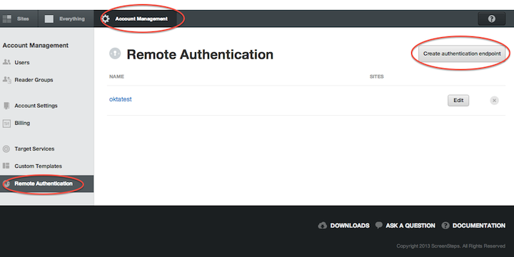
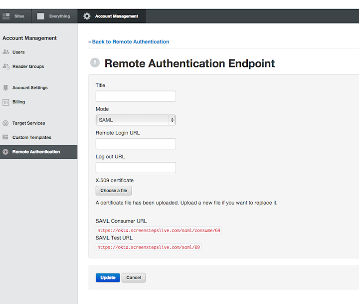

Log in to ScreenSteps with your credentials and select Admin.
Select Account Management>Remote Authentication>Create Authentication Endpoint.

Add any desired Title.

Copy and paste the following line into the Remote Login URL field:
Sign into the Okta Admin dashboard to generate this value.
Download the Token Signing X.509 Certificate below. Click Choose a file to upload it.
Sign into the Okta Admin dashboard to generate this value.
Click Update.